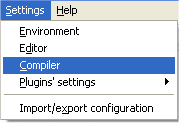
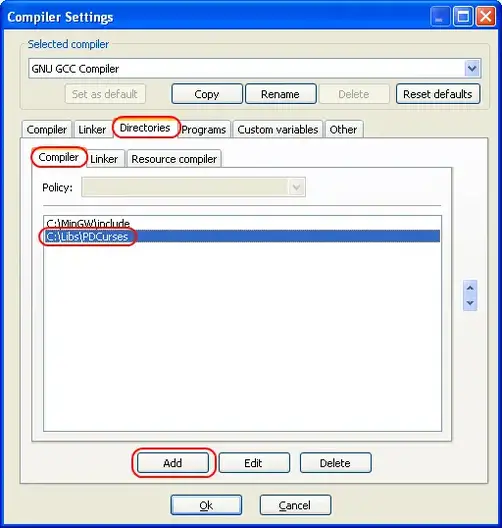
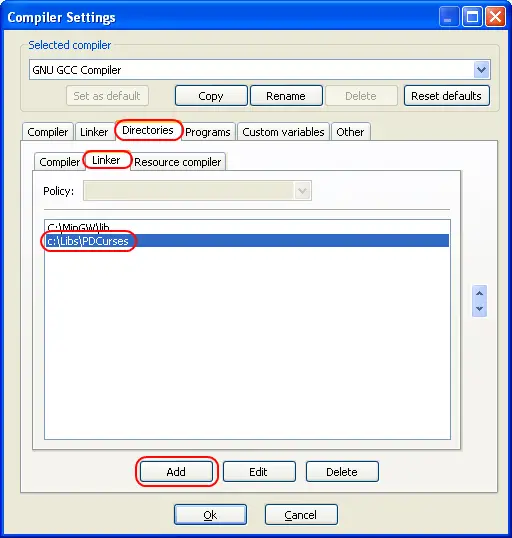
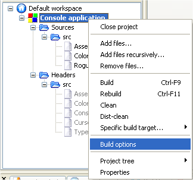
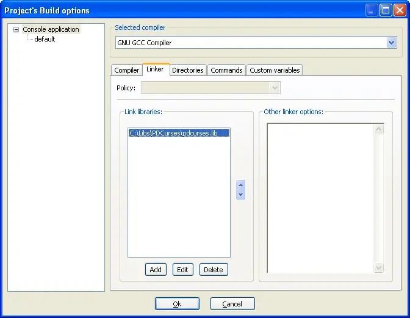

To recap the process needed to use a library:
Once per library:
- Acquire the library. Download it from the website or via a package manager.
- Install the library. Unzip it to a directory or install it via a package manager.
- Tell the compiler where to look for the header file(s) for the library.
- Tell the linker where to look for the library file(s) for the library (if there are any).
Once per project:
- Tell the linker which static or import library files to link (if there are any).
- #include the library’s header file(s) in your program.
- Make sure the program know where to find any dynamic libraries being used.
Steps 1 and 2 -- Acquire and install library
Download and install the library to your hard disk. See the tutorial on static and dynamic libraries for more information about this step.
Steps 3 and 4 -- Tell the compiler where to find headers and library files
We are going to do this on a global basis so the library will be available to all of our projects. Consequently, the following steps only need to be done once per library.
A) Go to the “Settings menu” and pick “Compiler”.

B) Click the “Directories” tab. The compiler tab will already be selected for you.
C) Press the “Add” button, and add the path to the .h files for the library. If you are running Linux and installed the library via a package manager, make sure /usr/include is listed here.

D) Click the “Linker” tab. Press the “Add” button, and add the path to the .lib files for the library (if there are any). If you are running Linux and installed the library via a package manager, make sure /usr/lib is listed here.

E) Press the “OK” button.
Step 5 -- Tell the linker which libraries your program is using
For step 5, we need to add the library files from the library to our project (if there are any -- if not, you can skip this step). We do this on an individual project basis.
A) Right click on the bolded project name under the default workspace (probably “Console application”, unless you changed it). Choose “Build options” from the menu.

B) Click the linker tab. Under the “Link libraries” window, press the “Add” button and add the library you wish your project to use.

C) Press the “OK” button
Steps 6 and 7 -- #include header files and make sure project can find DLLs
Simply #include the header file(s) from the library in your project.
See the tutorial A.1 -- static and dynamic libraries for more information step 7.